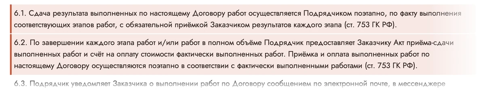

Шапка «Боюсь платить вперёд» — 10 вариантов
Страх отдать деньги и остаться без дома. Каждая шапка отвечает договором или страницей сайта: оплата по этапам (п. 2.3), приёмка каждого этапа (раздел 6), кассовый чек и акт на каждый платёж (п. 2.6). Проценты этапов на сайте расходятся — в шапки не вынесены.
Советую: 3 — сам договор с подсвеченными пунктами 6.1 и 6.2, самое сильное доказательство; 5 — путь денег по этапам с кадрами со стройки; 8 — честно называет, что платят заранее, до того как это найдут в договоре.
Вопрос клиента и ответ договором
Приём: вопрос-страх и ответ фактом- Идея
- Страх словами клиента — в оранжевом «облачке». Ниже спокойный ответ и три пункта договора, справа фото дома.
- Почему продаёт
- Человек узнаёт свой вопрос и тут же видит ответ с номером пункта. Тревога уходит быстрее, чем от рекламы.
- Риск
- Крупный вопрос напоминает о страхе, поэтому ответ стоит сразу под ним. Аванс вносится до стройки — не писать «ничего не платите вперёд».
«Заплачу вперёд — а дом так и не построят?»
Дом оплачиваете по этапам — по мере готовности
Страх против договора
Приём: контраст «страх — договор»- Идея
- Слева три страха зачёркнуты, справа на оранжевых плашках — что записано в договоре, с номером пункта.
- Почему продаёт
- Контраст считывается за секунду: у каждого страха свой ответ документом, без спора с конкурентами.
- Риск
- Строка «чек и акт» не должна прятать, что по п. 2.6 платежи вносятся наличными при встрече, — это говорим при звонке.
Страшно платить вперёд? Сверьте страх с договором
Отдать всю сумму сразу
Оплата по этапам стройкип. 2.3
Отдал деньги — а на руках ничего
Кассовый чек и акт на каждый платёжп. 2.6
Деньги взяли, а работу не сделали
Оплата по фактически выполненным работамп. 6.2
Сам договор: пункты 6.1 и 6.2
Приём: доказательство документом- Идея
- Настоящий фрагмент договора с подсвеченными пунктами лежит на границе синей и белой частей, под ним — три коротких пересказа.
- Почему продаёт
- Документ убеждает сильнее слов: человек читает сам пункт, а не нашу рекламу.
- Риск
- На телефоне текст фрагмента мелкий — смысл повторён крупно ниже. Картинка новая: img/dogovor-p6-1-2.webp.
Каждый этап принимаете вы. Оплата — по факту работ

Четыре пункта крупно на оранжевом
Приём: крупные номера пунктов- Идея
- Весь экран — фирменный оранжевый: четыре номера пунктов крупно, фото дома в белой рамке.
- Почему продаёт
- Номера пунктов выглядят как доказательство, и их легко найти в договоре. Призыв «прочитайте» звучит уверенно.
- Риск
- Без подписей номера ничего не скажут — подписи короткие и обязательные. Приём похож на шапку про сроки, отличаются пункты.
Прочитайте четыре пункта — прежде чем платить
Этап, акт, платёж — кадры со стройки
Приём: путь по шагам- Идея
- Пять карточек по порядку договора: подписание, доставка материалов, пол и основание стен, кровля и внешняя отделка, приёмка. На каждой — кадр из роликов сайта.
- Почему продаёт
- Видно, когда и за что человек платит. Неизвестность и есть главный страх — здесь её нет.
- Риск
- На «Как заказать» этапы оплаты названы иначе (кровля, затем утепление и отделка) и проценты другие. Здесь — названия из договора, без процентов.
Этап, акт, платёж — и так до сдачи дома
На каждый платёж — кассовый чек и акт. Порядок оплаты записан в п. 2.3 договора.
- авансДоговор подписанПервым делом — проект дома, п. 2.8
- при доставкеДоставка материалов и начало работ
- после этапаПол и основание стен
- после этапаКровля и внешняя отделка
- при приёмкеПриёмка работПодписание акта
Те, кто приезжал смотреть
Приём: слово клиентов- Идея
- Три настоящих ролика из блока «Отзывы тех, кто приезжал» на главной, подписи как на сайте. Слева адрес офиса и производства.
- Почему продаёт
- Люди, которые сами приехали и посмотрели, убеждают сильнее компании. Страх «кому я плачу» снимается чужим опытом.
- Риск
- Ролики не про оплату — подписи этого не обещают. Цитат не добавлять.
Не верьте на слово — послушайте тех, кто приезжал
Ролики сняли сами клиенты после поездки на объект и производство.
Офис и производствоМосква, ул. Адмирала Корнилова, 66, стр. 20
Проверьте, кому платите
Приём: проверьте сами- Идея
- Белая карточка на фото: офис и производство с адресом и часами, договор на сайте, право проверять работы по п. 5.5.
- Почему продаёт
- Страх платить вперёд — это страх неизвестной фирмы. Адрес и приглашение приехать отвечают на него прямо.
- Риск
- По п. 5.5 проверка идёт через запрос устных или письменных пояснений — не обещать «приезжайте на стройку в любое время». Фото офиса на сайте нет.
Посмотрите, кому платите, — до договора
- Приезжайте в офис и на производствоМосква, ул. Адмирала Корнилова, 66, стр. 20 · ПН–ВС 11:00–18:00, приём по записи
- Прочитайте договор до встречи14 страниц на сайте, вопросы разберём построчно
- После подписания проверяйтеВправе в любое время проверять ход и качество работ, п. 5.5
Честно: что платят заранее
Приём: честные условия- Идея
- Две колонки: что оплачивается заранее и отдельно (аванс, окна и покраска, сваи и инженерка) и что — по этапам. Внизу — как проходят платежи.
- Почему продаёт
- Мы сами называем предоплату до того, как её найдут в договоре. Честность здесь и есть довод.
- Риск
- Самый длинный вариант. Строку про наличные и бригаду можно сократить, но прятать не стоит — это п. 2.6 и 3.2.12.
Что платите заранее и отдельно — говорим до договора
Платежи вносятся компании при личной встрече, наличными, с кассовым чеком и актом (п. 2.6). Бригаде напрямую не платите: такие платежи не засчитываются (п. 3.2.12).
Аванс — сразу в проект дома
Приём: ценность- Идея
- Синяя панель: что человек получает после аванса. Справа — кадр из ролика про конструктивный проект и плашка «по акту».
- Почему продаёт
- Аванс перестаёт быть «деньгами в пустоту»: за ним понятная работа и документы по акту.
- Риск
- Не называть сумму проекта и что бывает при отказе — это п. 2.3.1 и 2.8, их объясняет менеджер. Чат и два проекта — со страницы «Как заказать», шаг 5, в договоре их нет.
После аванса первым делом — проект вашего дома
- Архитектурный проектКак будет выглядеть дом
- Конструктивный проектКак собирается каркас под вашу планировку
- Общий чат с командойИнженер-проектировщик, руководитель отдела технологов, ответственный за проект
- Цвет покраскиСогласуем здесь же, если покраска в заказе
Первый слайд: строка про оплату
Приём: малая правка первого слайда- Идея
- Нынешний первый слайд с домом и белой стрелкой, но вместо «от 26 дней» и «не меняется до сдачи» — оплата по этапам. Затемнение плотнее, чтобы текст читался.
- Почему продаёт
- Самый быстрый шаг: дизайн прежний, а спорные обещания заменены фактом из договора.
- Риск
- Слайды листаются, дальше первого видят не все — поэтому текст в первом. Короткая строка не объясняет аванс — подробности на странице «Договор».
Каркасные дома под ключ. Оплата по этапам
Каждый этап принимаете по акту. На каждый платёж — кассовый чек.